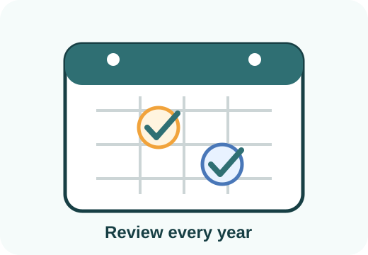

Review planner
Plan your annual estate planning review.
Choose a review month, save reminder notes locally, and create copyable text for your calendar or family planning packet.

Reminder only: this page helps you plan a review habit. It does not decide whether your documents are valid, current, or legally complete.
Build your review plan
Choose a review month, note who to notify, and check life-change triggers you want to remember.
0%0 of 10 triggers selected
Life-change triggers
Choose a review month and triggers, then build your reminder text.
After review
Use the planner with the dashboard.
After choosing a review habit, return to the dashboard and export a local backup of your non-sensitive progress. Keep a printed or saved packet where a trusted person can find it.